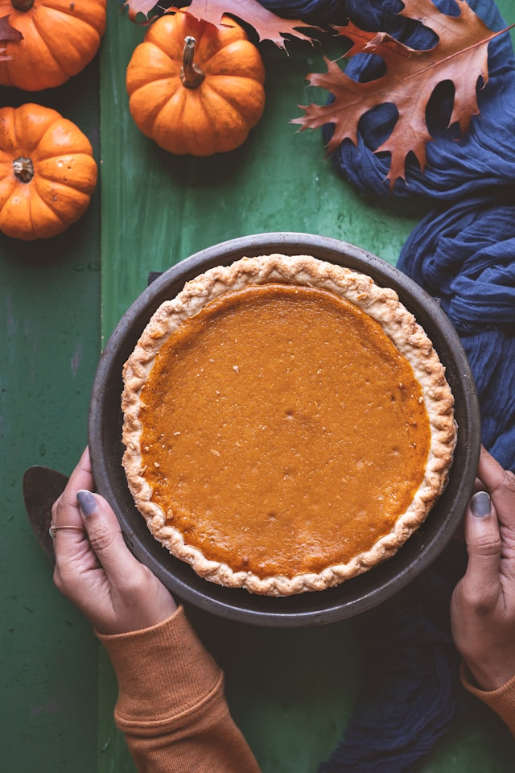

Home
Perfect Pumpkin Pie

Description
The one and only pumpkin pie recipe made with sweetened condensed milk, pumpkin puree, and warm spices. Eagle Brand makes this traditional dessert the perfect ending to a Thanksgiving feast.
I always looked forward to Thanksgiving pumpkin pies they gave out at school lunches it brings back fond memories
Ingredients
- 1 (15-ounce) can pumpkin puree
- 1 (14-ounce) can Eagle Brand Sweetened Condensed Milk
- 2 large eggs
- 1 teaspoon ground cinnamon
- 1/2 teaspoon ground ginger
- 1/2 teaspoon ground nutmeg
- 1/2 teaspoon salt
- 1 (9-inch) unbaked pie crust
Steps
- Gather all ingredients and preheat the oven to 425 degrees F (220 degrees C).
- Whisk pumpkin puree, condensed milk, eggs, cinnamon, ginger, nutmeg, and salt together in a medium bowl until smooth.
- Pour into crust. Bake in the preheated oven for 15 minutes.
- Reduce oven temperature to 350 degrees F (175 degrees C) and continue baking until a knife inserted 1 inch from the crust comes out clean, 35 to 40 minutes. Let cool before serving.
- Enjoy!